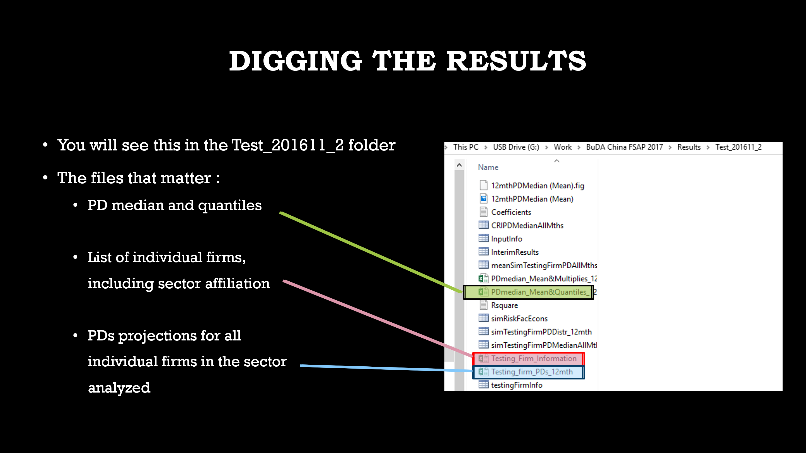
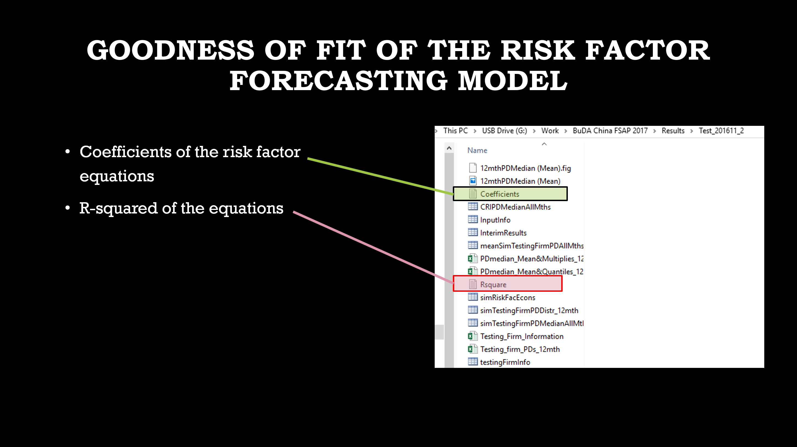

BuDA: A Bottom-Up Default Analysis Platform for Macrofinancial Analysis
Jorge A. Chan-Lau
Institute for Capacity and Development, International Monetary Fund Credit Research Initiative, National University of Singapore
Joint work with J.-C. Duan, W. Miao, and the Credit Research Initiative team of the National University of Singapore
International Monetary Fund March 15, 2018
Outline
◻ Conceptual framework
◻ Modeling methodology
◻ Differences with other approaches
◻ Surveillance applications
◻ Using BuDA
Part 1: Conceptual Framework
The macrofinancial challenge
◻ Analyze "What-if" macro-financial scenarios
◻ Project default risk of individual firms (financial/non-financial)
◻ Model should accommodate Big Data
The macrofinancial challenge
China: financial firms, 1-year PD distribution

Our solution
BuDA: A Bottom-Up Default Analysis Platform
Computational platform developed by Jin-Chuan Duan and Weimin Miao, National University of Singapore, and Jorge A. Chan-Lau, International Monetary Fund, with the support of the staff of the Credit Risk Initiative, Risk Management Institute, National University of Singapore
BuDA forecasting approach
BuDA forecasting approach
◻ Matlab interactive toolbox
◻ Thirty nine (39) countries
◻ 10000+ publicly listed firms
◻ Can expand to 100+ countries
Current coverage
G-7 countries
| Canada |
France |
Germany |
Italy |
Japan |
UK |
USA |
|
| Advanced Europe | ||||
| Austria | Belgium | Finland | Greece | Ireland |
| Luxembourg | Portugal | Spain | The Netherlands | |
| Asia | ||||
| China | Hong Kong SAR | Taiwan POC | India | Indonesia |
| Malaysia | Singapore | Thailand | The Philippines | |
| EMEA economies | ||||
| Kenya | Mauritius | Nigeria | South Africa | Turkey |
| United Arab Emirates | ||||
| Latin America and the Caribbean | ||||
| Argentina | Brazil | Chile | Colombia | Jamaica |
| Mexico | Peru | Venezuela | ||
BuDA Surveillance Applications
2016 Article IV Canada
2016 Article IV Chile
2016 Article IV Indonesia
2016 Article IV United Arab Emirates
2016 WHD Regional Economic Outlook
2017 FSAP China
2017 FSAP Japan
Japan, median 1-year PD of financial firms, scenario analysis

China, median 1-year PD of financial firms, scenario analysis

Part 2:Modeling methodology
A two step approach
◻ Use scenario variables to project risk factors
◻ Project PDs using projected risk factors

Risk factors for forecasting PDs
Part 2A:PD Modeling
Default and insolvency
◻ Default: failure to pay or deliver
◻ Insolvency: asset value < liability values
◻ Cash-flow insolvency: Liquidity-driven default
Types of default risk models
◻ Structural models, i.e. Merton-type
◻ Reduced form models, i.e. Intensity models
Reduced form models
◻ Statistical relationship between default and predictors
◻ Choice of predictors
◻ Economic intuition
◻ Data mining
◻ BuDA: Duan-Sun-Wang (DSW) forward intensity model
◻ Can model term structure of default
◻ Captures other exits
Other exits matter

DSW model (2012, J. of Econometrics)
◻ Two poisson processes
◻ Default/bankruptcy
◻ Other exits
◻ Forward intensities depend on risk factors
◻ Pseudo maximum likelihood estimation
DSW model data
◻ Sample: 1991 - present, monthly data
◻ Default events
◻ Bloomberg
◻ Corporate announcements
◻ Credit rating agencies
◻ News sources
◻ Financial data
◻ Bloomberg BackOffice
◻ Compustat
DSW model monthly calibration
◻ Calibration groups
◻ North America
◻ Europe
◻ Asia-Pacific Advanced Economies
◻ Asia-Pacific Developing Economies
◻ EM Latam, Middle East, Africa
◻ China
◻ India
DSW prediction accuracy
Part 2B:Risk factor modeling
Common risk factor
◻ Regress common risk factors on covariates and lagged values
$ \Delta X_{m,t} = \beta^{X}_{m,0} + \sum_{k=1}^{n} \beta^{X}_{m,k} Z_{k,t} + \gamma^{X}_{m,1} X_{m,t-1} + \gamma^{X}_{m,2} X_{m,t-2} + \epsilon^{X}_{m,t}$
where:
$X_m: \text{ common risk factors, } m = 1, 2$
$Z_k: \text{ } kth \text{ scenario variable}$
Firm specific risk factor
◻ Regress average industry risk factor on covariates and lagged values
$ \Delta {\bar{Y}}_{i,j,t} = \beta^{Y}_{i,j,0} + \sum_{k=1}^{n} \beta^{Y}_{i,j,k} Z_{k,t} + \gamma^{Y}_{i,j,1} {\bar{Y}}_{i,j,t-1} + \gamma^{Y}_{i,j,2} {\bar{Y}}_{i,j,t-2} + \epsilon^{Y}_{i,j,t}$
where:
$Y_{i,j}:\text{ }ith \text{ country industry average of firm specific risk factor } j$
$Z_k: \text{ } kth \text{ scenario variable}$
Risk factor regression accuracy
Firm-specific risk factor projection for individual firms
Part 3:BuDA and Moody's KMV
Issues
◻ BuDA PD < Moody's EDF (Low, medium risk firms)
◻ BuDA PD > Moody's EDF (high risk firms)
◻ Potential reasons
◻ Moody's does not model PDs
◻ Different calibration samples
◻ Moody's does not model other exits
Moody's EDF Methodology

Moody's EDF Calibration

Part 4:Surveillance Applications
2016 Article IV Chile
2016 Article IV Chile

2016 Article IV Chile

Part 5:Using BuDA



Appendix:More resources
BuDA Web Page
◻ Link: https://jchanlauimf.github.io/BuDAWeb/
◻ Check the BuDA web page for:
◻ Complete documentation on methodology
◻ Links to surveillance documents
◻ Instructions on downloading BuDA